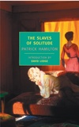

David Lodge is a novelist and critic and Emeritus Professor of English Literature at the University of Birmingham, England. His novels include Changing Places, Small World, Nice Work, and Author, Author. His most recent works of criticism are Consciousness and the Novel and The Year of Henry James.
|  | The Slaves of Solitude 1940s London is a war zone. But for the residents of Mrs. Payne's boarding house the battlefield is the supper table, and the enemy is the resident of the room next door. Alternately bleak and hilarious, The Slaves of Solitude is a favorite of such writers as Sarah Waters and Nick Hornby. Price: $11.96 (20% off) |
May 11, 2006: History Boy
Untold Stories by Alan Bennett
February 10, 2005: GRAHAM GREENE & THE STIGMATA
December 2, 2004: The End of the Affair
The Life of Graham Greene,Volume Three: 1955–1991 by Norman Sherry
May 27, 2004: Goodbye to All That
After Theory by Terry Eagleton
November 20, 2003: Disturbing the Peace
Elizabeth Costello by J.M. Coetzee
May 23, 2002: Happy Birthday!
Critical Times: The History of the 'Times Literary Supplement' by Derwent May
July 5, 2001: Sick with Desire
The Dying Animal by Philip Roth
November 30, 2000: OUR MAN ON CAPRI
June 15, 2000: Friendship
Greene on Capri: A Memoir by Shirley Hazzard
July 15, 1999: Waugh's Comic Waste Land
November 19, 1998: Bye-Bye Bech
Bech at Bay: A Quasi-Novel by John Updike
October 17, 1996: GRANTA'S BEST
August 8, 1996: O Ye Laurels
The Best of Young American Novelists'Granta 54,' Summer 1996 edited by Ian Jack
May 9, 1996: Confessions of a Literary Man
Not Entitled: A Memoir by Frank Kermode
September 21, 1995: GREENE & ANTI-SEMITISM
June 22, 1995: The Lives of Graham Greene
Graham Greene: The Man Within by Michael Shelden
Graham Greene: The Enemy Within by Michael Shelden
The Life of Graham Greene Volume II, 1939–1955 by Norman Sherry
Graham Greene: Three Lives by Anthony Mockler
Graham Greene: Friend and Brother by Leopoldo Duran, translated by Euan Cameron
The Graham Greene Film Reader: Reviews, Essays, Interviews & Film Stories edited by David Parkinson
March 25, 1993: Writer's-Writer's Writer
Surviving: The Uncollected Writings of Henry Green edited by Matthew Yorke
April 9, 1992: THE FICTION OF FACT
February 13, 1992: Lawrence in Love
D.H. Lawrence: The Early Years, 1885–1912 by John Worthen
April 12, 1990: HELP SALMAN RUSHDIE!
April 13, 1989: Hermits and Fools
The Lyre of Orpheus by Robertson Davies
September 29, 1988: Outrageous Things
The Passion by Jeanette Winterson
April 14, 1988: The Marvelous Boy
Chatterton by Peter Ackroyd
The Family Romance of the Imposter-Poet Thomas Chatterton by Louise J. Kaplan
May 7, 1987: The Home Front
Staring at the Sun by Julian Barnes
March 26, 1987: Closing Time
The Old Devils by Kingsley Amis
Consciousness and the Novel: Connected Essays (2002)
Home Truths: A Novella (1999)
Home Truths: A Play (1999)
The Practice of Writing: Essays, Lectures, Reviews, and a Diary (1996)
Therapy: A Novel (1995)
The Art of Fiction: Illustrated from Classic and Modern Texts (1992)
Paradise News: A Novel (1991)
The Writing Game: A Comedy (1991)
After Bakhtin: Essays on Fiction and Criticism (1990)
The British Museum Is Falling Down (1989)
The Modes of Modern Writing: Metaphor, Metonymy, and the Typology of Modern Literature (1988)
Nice Work: A Novel (1988)
The Novelist at the Crossroads: And Other Essays on Fiction and Criticism (1986)
Write On: Occasional Essays, '65-'85 (1986)
Out of the Shelter (1985)
Language of Fiction: Essays in Criticism and Verbal Analysis of the Nglish Novel (1984)
Small World: An Academic Romance (1984)
Ginger, You're Barmy (1982)
Souls and Bodies (1982)
Working with Structuralism: Essays and Reviews on Nineteenth and Twentieth Century Literature (1981)
How Far Can You Go? (1980)
Modernism, Antimodernism and Postmodernism (1977)
The Modes of Modern Writing: Metaphor, Metonymy, and the Typology of Modern Literature (1977)
Changing Places: A Tale of Two Campuses (1975)
20th Century Literary Criticism; A Reader (1972)
Evelyn Waugh (1971)
The Novelist at the Crossroads, and Other Essays on Fiction and Criticism (1971)
Out of the Shelter (1970)
* The links above point to Barnes & Noble, and may not always work, as a given book or edition may now be out of print or listed under a different ISBN. If you experience problems, try searching the Barnes & Noble catalog by author and title.